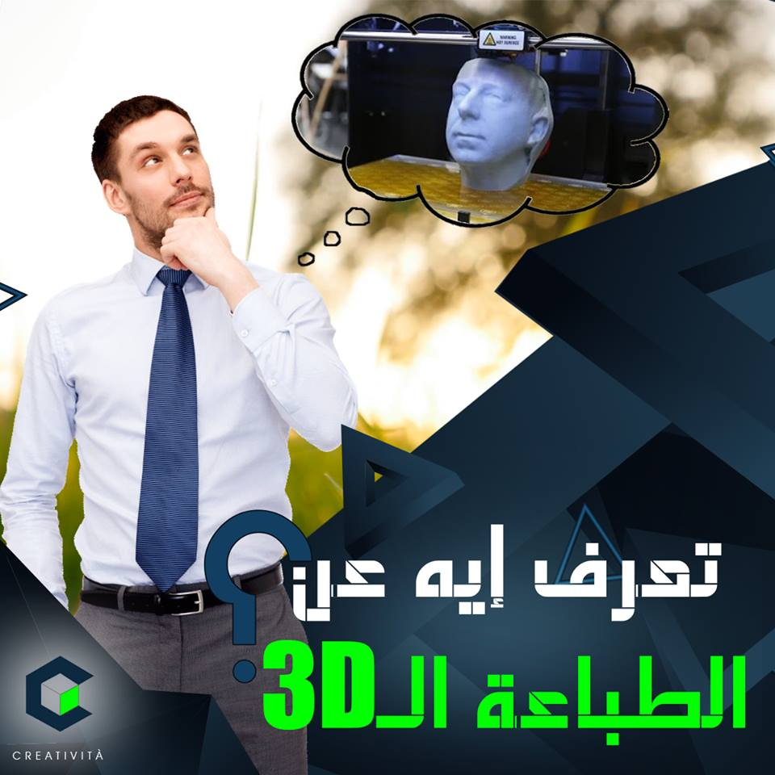
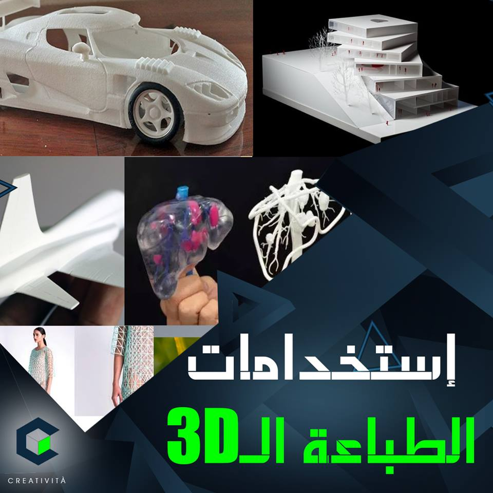
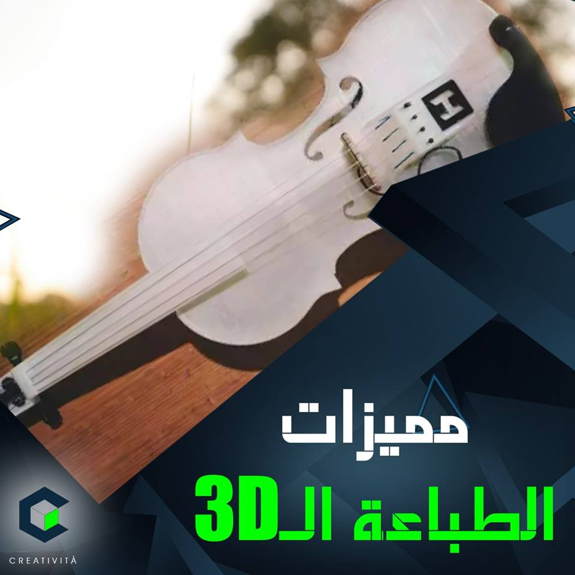

تفتكر الطباعة مقتصرة على انك تطبع ورق أو تطبع صور او رسمة على تيشرت ؟
طب سمعت عن حاجة اسمها "طباعة ثلاثية الأبعاد" 3D Printing؟ 🤔
الطباعة ثلاثية الابعاد (أو زى ما بيقولوا عليها احيانًا التصنيع التراكمي أو التجميعي additive manufacturing) دى تقنية حديثة فى التصنيع بتعتمد على تشكيل النموذج أو المجسم اللى انت عاوزه عن طريق طباعة مجموعة من الطبقات المتتالية كل طبقة تتحط فوق التانية لغاية ما نحصل على الشكل النهائي. طب لسة مش فاهم يعني بتعملوا ايه بالضبط ؟ 🤷♂😂
الموضوع بسيط ....أول خطوة لازم نعملها ان يكون عندنا نموذج رقمي للمجسم أو الشيء اللى عاوز تطبعه، ودة بيتعمل من خلال:
ماسح ضوئي ثلاثي الابعاد 3D Scanner
أو ممكن تصممه من خلال برامج زى 3D max
تانى خطوة الجهاز بيقوم بمعالجة الملف الخاص بالمجسم عن طريق برنامج اسمه "Slicer" بيعمل على تقطيع المجسم لسلسلة من الطبقات الرقيقة جدًا اللى بيوصل سمكها لـ 0.1 مم او أقل وممكن يوصلوا 1000 طبقة.تالت خطوة هي تجهيز مادة الطباعة، وبيتم تزويد الطابعة بالمادة اللى بتكون على شكل أسلاك أو خيوط.
آخر خطوة بيدخل المجسم الناتج في عمليات التنظيم والتنعيم والصنفرة لإزالة الحواف والأجزاء غير المرغوب بها.
تابعوا صفحتنا على facebook و instagram.
|

الطباعة ثلاثية الأبعاد ملهاش حدود وليها استخامات كتير فى مجالات لا حصر لها ... خلينا نديكم نبذة بسيطة عنها:
1️⃣مجال العمارة👷
دلوقتي بتبنى بيت او عمارة تقدر تعمل مجسم للمبنى قبل ما تبدأ فى بنائه
2️⃣ مجال الطب : 👩⚕️
العلماء والدكاترة دلوقتي بقوا ممكن يطبعوا انسجة عشان التئام الجروح او يطبعوا عضو كامل ودة حصل فعلا وانقذ حالات كتير...ممكن كمان يطبعوا اطراف صناعية بالمقاسات والمواصفات اللى عاوزينها.
3️⃣ مجال الصناعات الثقيلة🚛🚗
عارف عشان تصنع عربية مثلا محتاج وقت وماكينات وعمالة اد ايه؟
ممكن عشان تجمع قطع عربية واحدة ياخد ايام وشهور 😴
يا جدع انجز واطبع عربيتك فوقت اقل وتكلفة اقل وعمالة اقل وماكينات اقل 😍
4️⃣التسليح 🤐🤫🤫
دلوقتى ممكن البلاد تعمل تصاميم لاسلحة متطورة جدا بالطباعة ثلاية الابعاد 🔫
5️⃣الازياء والموضه 👠👗💃
اطبعى فستان فرحك اللى بتحلمى بيه واكسسواراتك كمان.😂😂😂
الخلاصة 💡
تقدر تطبع اى حاجه تخطر على بالك ... ياترى فى ايه جه فبالك دلوقتى عشان نطبه ؟ 🤔 😂
|

هنتكلم معاكم المرة دى عن مميزات الطباعة ثلاثية الابعاد 😎
نبدأ بأول حاجه....
وهى ان لو عندك تصميم معين عاوز تطبعه ف سهل انك تعدل على التصميم وتضيف فيه اللى انت عاوزه قبل الطباعة 🤙
تانى ميزة
معانا ان الطباعة ثلاثية الابعاد مش بتستخدم اجهزة وادوات كتير فبالتالى هتوفر وقتك وفلوسك كمان😉
تالت ميزة
واللى تعتبر اهم ميزة فيهم ان مهما كان التصميم او المجسم اللى انت عاوزه صعب او معقد هتقدر تطبعه بكل بساطة 😎💪
رابع ميزة
ان تكلفة الطباعة ثلاثية الأبعاد مهما كانت درجة تعقيد المجسم وصعوبته اقل من تكلفة شراء نفس المجسم متصنع .👌
يعنى مثلا لو عاوز تطبع مجسم لآلة موسيقية ولتكن كمنجة🎻
هتلاقى ان الmaterial بتاعة الكمنجة المطبوعة أفضل و أرخص من الكمنجة المتصنعة بطريقة تقليدية وبتشتريها من اى محل فالسوق.
لو عاوز تعرف أكتر عن المجال او عندك اى فكرة مجسم وعاوز تطبعها سيبلنا كومنت اوو اعتلنا على رسايل صفحة الfacebook.
|